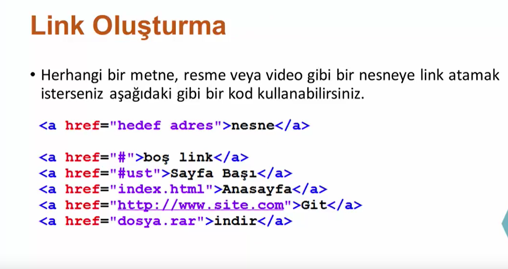

Linkler
Burası boş linktir
Paraf id'sine sahip sayfa içi elemanına gitmek için tıkla
Diğer html sayfasına gider
Youtube
Dosyayı indirmek için tıklayınız
Mail Yolla
Burası paragraftır
Sayfanın en üstüne dön
